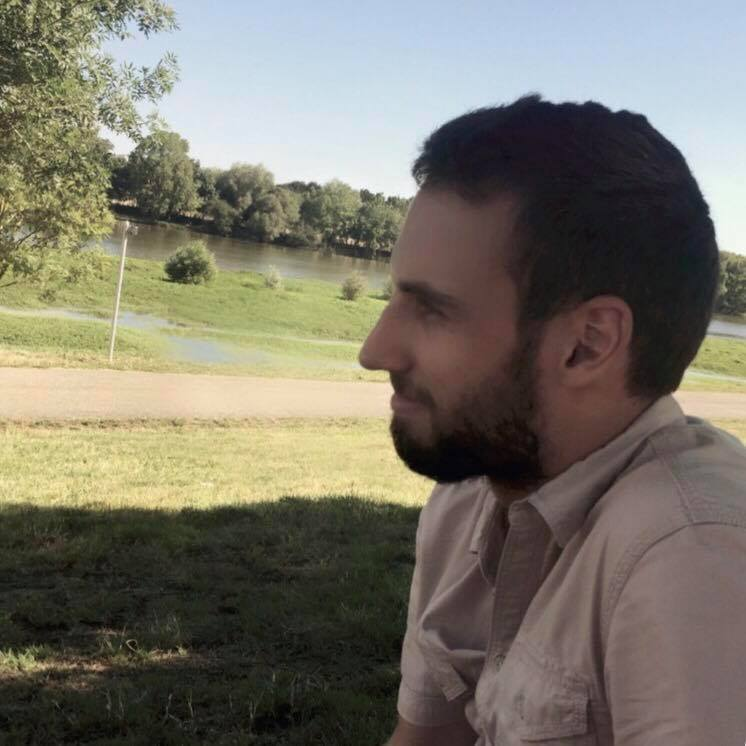

Damien Desnoë - Développeur web Front-End et WordPress

Bonjour ! Je suis Damien Desnoë. J'ai découvert internet à l'âge de 12 ans.
J'ai tout de suite trouvé génial de pouvoir s'exprimer, et trouver des informations en quelques clics.
Puis j'ai découvert les travaux manuels: La mécanique automobile, la menuiserie... Je me suis également découvert une passion pour la moto.
Chacune de ces expériences m'a apporté beaucoup. Grâces à elles, j'ai pu développer ma créativité et atteindre une certaine ouverture d'esprit.
Ainsi, plusieurs projets me sont venus en tête:
- Un blog dédié à ma passion pour la moto - A venir
- Plusieurs Mini-Projets
- Ce site, dédié à mon activité professionnelle
- Et d'autres, à venir...